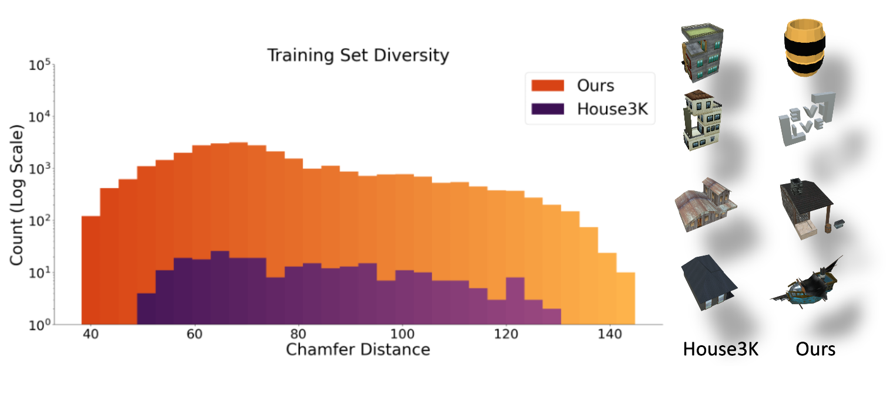
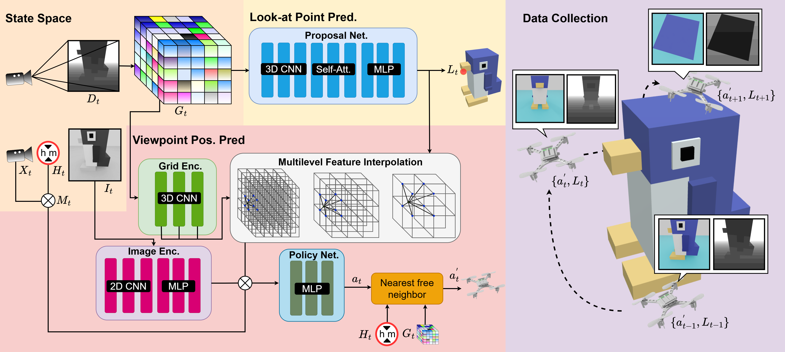
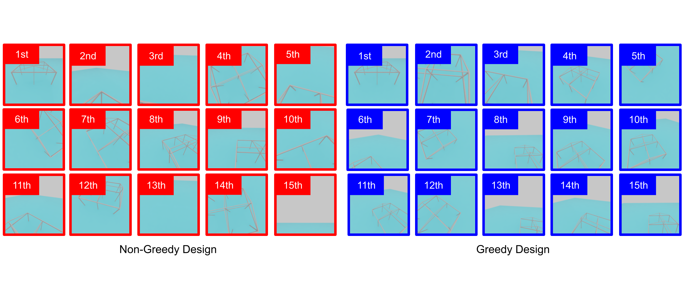

A voxel is worth more than a ray. Hestia treats each voxel as a cube by considering its six faces, rather than a point. This reduces the information loss inherent in point approximations, ensuring a more accurate representation of the voxel.

More diverse and large-scale training set. Our processed training set from Objaverse is two orders of magnitude larger than those used in previous studies and includes at least 18 more categories than prior datasets.

Hierachical structure. Predicting a 5-DoF continuous action space directly is challenging for RL methods. To address this, Hestia adopts a hierarchical structure that simplifies the decision-making process. The approach first predicts a look-at point, serving as the target of focus, and then determines the optimal viewpoint position based on this predicted point.
